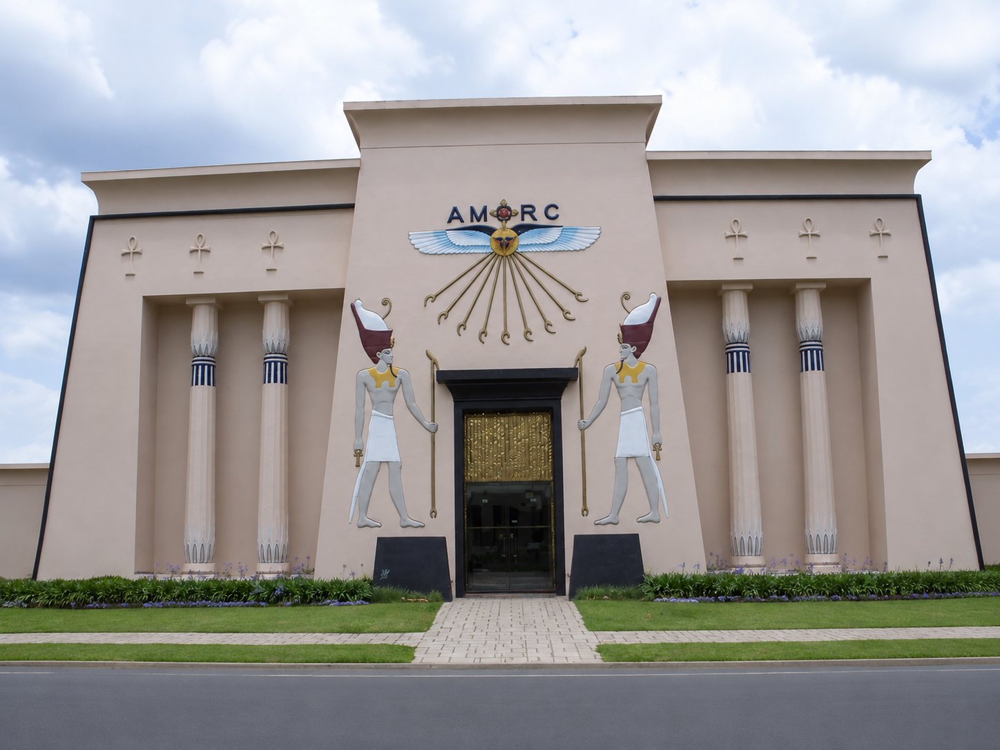

Museu do olho
Escreva aqui uma apresentação inicial sobre o tema
inportância Cultural
Apresente o tema escolhido. Explique o que será mostrado no site, quem ou o que está sendo estudado e qual é a relação desse assunto com a arte e a cultura do paraná

Escreva aqui um título relacionado á história do tema
Explique a origem e o contexto histórico do tema. Informe quando e onde ele surgiu, como se desenvolveu no paraná quais acontecimentos foram importantes e quais pessoas, grupos ou movimentos participaram dessa história.

Escreva aqui um título importância artística e cultural do tema
Explique por que esse tema é importante para a arte e para a cultura paranaense. Apresente suas principais características, obras, manifestações, influências ou contribuições. Comente também onde esse tema pode ser encontrado ou reconhecido atualmente.